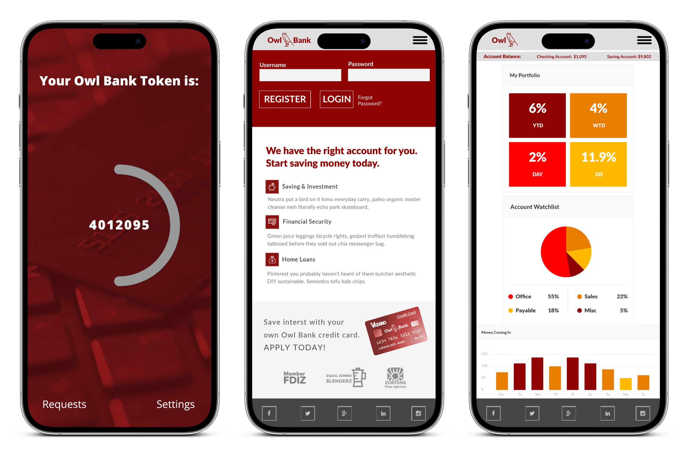
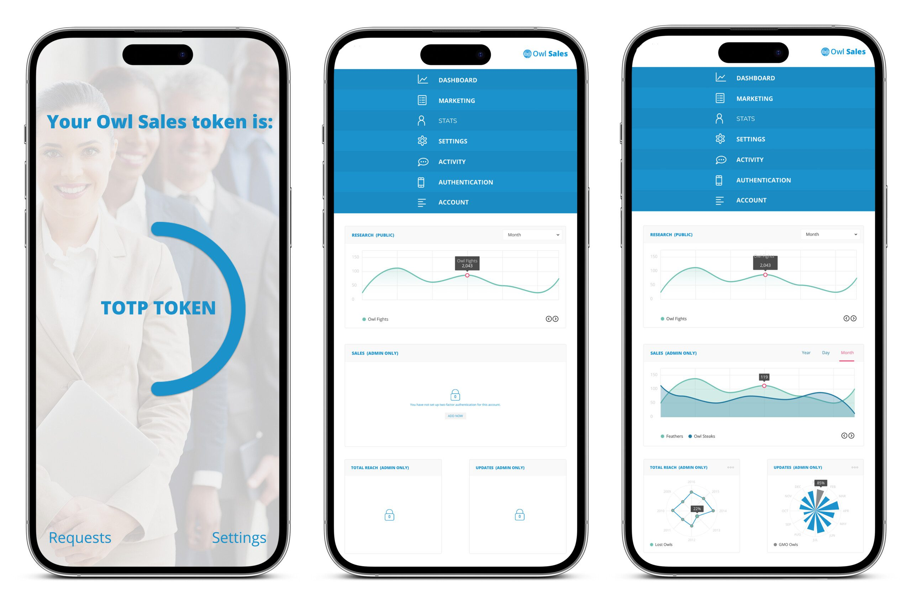
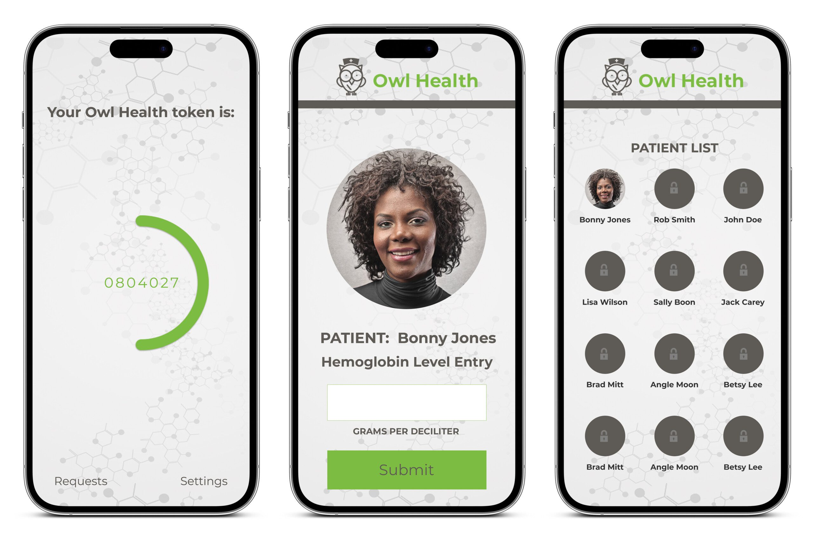

Twilio +
Authy
Modern, responsive mobile UI design for Twilio's Owl demo brand — multiple design options for their two-factor authentication product.

Modern, responsive mobile UI design for Twilio's Owl demo brand — multiple design options for their two-factor authentication product.
Twilio powers the communications layer for companies like Airbnb, Uber, and Facebook Messenger — and Authy is their two-factor authentication product used by millions. They needed modern, responsive mobile UI designs for their Owl demo brand — the showcase app they use to demonstrate Authy's capabilities to enterprise clients and developers. The demo brand had to look like a real product, not a wireframe.
I designed multiple responsive mobile UI options across different verticals — banking, healthcare, and general consumer — each demonstrating how Authy's 2FA integrates seamlessly into a polished, production-quality interface. The designs had to be clean enough to let the authentication flow take center stage while looking credible enough that developers could imagine the experience in their own apps.


